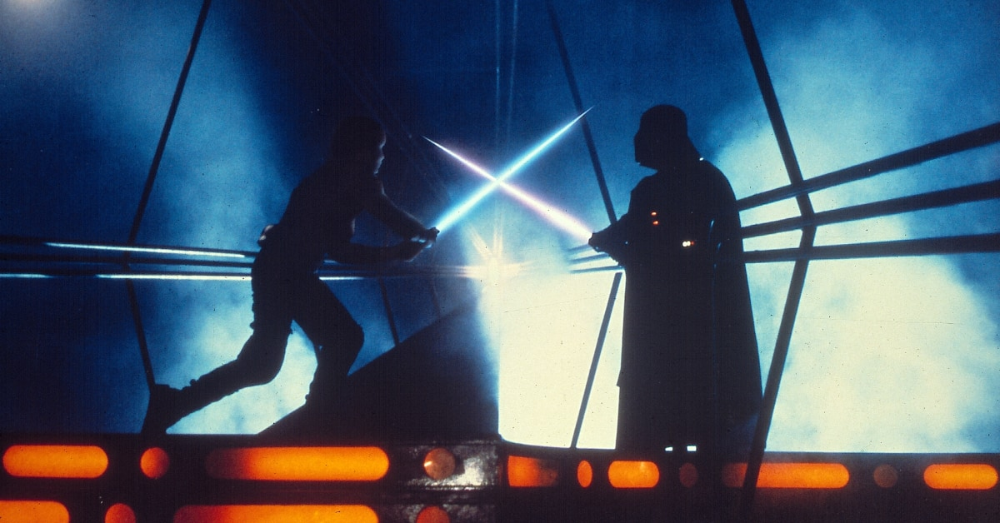

THE BREAKFAST CLUB
(1985)
Drama/Teen 7.9 89%
Director : John Hughes
Cast : Emilio Estenez, Judd Nelson, Molly Ringwald, Anthony Michael Hall, Paul Gleason, John Kapelos, Ally Sheedy
Famous Quote : "We're all pretty bizarre. Some of us are just better at hiding it, that's all."- Andrew
This film is an earnest, engaging attempt at portraying teens and their problems is a realistic light.
THE BIG LEBOWSKI
(1998)
Comedy/Indie Film
Director : Joel and Ethan Coen
Cast : Jeff Bridges, John Goodman, Julianne Moore
Famous Quote : "I'm the Dude, so that's what you call me."- The Dude
Coen Brothers arguably made the funniest movie of that decade. They also manage to construct a kidnap mystery in which the detective isn't a detective and nobody was actually kidnapped.

SUNSET BLVD.
(1950)
Noir/Drama 8.4 98%
Director : Billy Wilder
Cast : William Holden, Gloria Swanson
Famous Quote : "All right, Mr. De Mille, I'm ready for my close up."- Norma Desmond
You would be surprised to know that a dead guy narrated it. The performances do justice to the ruthlessly witty script. It is the story plotted when the Hollywood has completely moved on from the silent film era.
AMERICAN BEAUTY
(1999)
Romantic/Drama 8.3 87%
Director : Sam Mendes
Cast : Kevin Spacey, Annelle Bening
Famous Quote : "Remembers those posters that said,'Today is the first day of the rest of your life?' Well that's true for every day but one - the day you die."- Lester Burnham
This is a story of Lester Burnham : a man who turned his midlife crisis into a midlife resolution - even if his self - liberating antics would ultimately drove disastrous.

GOOD WILL HUNTING
(1997)
Drama/Romance 8.3 97%
Director : Gus Van Sant
Cast : Robin Williams, Matt Damon, Ben Affleck, Minnie Driver
Famous Quote : "It's not your fault!!"- sean Maguire
A heartfelt story of a friendship between a troubled math genius and his unconventional counseller. Remember when young actor buddies Matt and Ben won Oscar for Best Original Screenplay? What happened to those guys? anyway. By the way, Original climax was Damon and Driver drive into the sunset.
A CLOCKWORK ORANGE
(1971)
Drama/Sci-fi 8.2 87%
Director : Stanley Kubrick
Cast : Molcolm McDowell, Patrick Magee
Famous Quote : "It's funny how the colors of the real world only seem really real when you viddy them on the screen."- Alex
It's the film that started debate over violence in cinema. The Singin' In The Rain sequence, which remains one cinema's most deeply upsetting.
LIFE IS BEAUTIFUL
(1997)
War/Romance 8.6 80%
Director : Robert Benigni
Cast : Robert Benigni, Nicoletta Braschi, Giorgio Cantarini
Famous Quote : "Nothing is more necessary than the unnecessary."- Uncle
Father shields his son from Nazi's horror with comedy, indomiability of humanity even in midst of inhumanity. A very good movie.

PATHER PANCHALI
(1955)
Drama 8.6 98%
Director : Satyajit Ray
Cast : Subir Banerjee, Karuna Banerjee, Chunibala Devi
Famous Quote : "Can't an old woman have wishes too?"- Chunibala
Ray captures the rhythms of life in a poor, rural village in minute detail, filtering family experiences through the eyes of a young boy. It's no wonder, It became the first Indian film to achieve widespread international acclaim and establish young Ray as a master filmmaker.

CHINATOWN
(1974)
Mystery/Crime 8.1 99%
Director : Roman Polanski
Cast : Jack Nicholson, Faye Dunaway
Famous Quote : "Course I'm respectable. I'm old. Politicians, ugly buildings, and whores all get respectable if they last long enough."- Noah Cross
It is a visually lavish trip back into the hard bolied detective genre. A never-bettered noir masterpiece.

SAVING PRIVATE RYAN
(1998)
War/Drama 8.5 93%
Director : Steven Spielberg
Cast : Tom Hanks, Matt Damon, Edward Burns, Tom Sizemore
Famous Quote : "I just know that every man I killed the farther away from home. I feel."- Captain Miller
The blood spilling, visceral power of its Omaha Beach D-Day-landing opening act ensured that Spielberg's fourth W W II movie set the standard for all future battle depictions.
PYSCHO
(1960)
Horror/Thriller 8.5 96%
Director : Alfred Hitchcock
Cast : Anthony Perkins, Janet Leigh
Famous Quote : "A boy's best friend is his mother."- Norman Bates
Hitch's serial killer thriller was a shocker-- but not just because of the shower scene, but first to show a toilet in a movie. This invented a genre : The psycho-killer slasher movie. No longer were movie monsters just big, hairy wolf-men, or vampires. They could now look completely normal. They could be the guy sat right next to you, in fact...

THE USUAL SUSPECTS
(1995)
Thriller/Mystery 8.5 89%
Director : Bryan Singer
Cast : Kevin Spacey, Stephen Baldwine, Gabriel Byrne, Chazz Palmiteri, Kevin Pollack
Famous Quote : "The greatest trick the devil ever pulled was convincing the world he did not exist. And like that... He is gone,"- Verbal
This film attains true greatness through its supernatural-horror-style backdrop who terrifies even the most hardened criminal. A big arises in everyone's mind.. "Who is Keyser Soze?"
CINEMA PARADISO
(1988)
Drama 8.5 89%
Director : Giuseppe Tornatore
Cast : Salvatore Cascid, Philippe Noiret, Marco Leonardi
Famous Quote : "Thank you for everything you've done for me."- Salvatore
This bittersweet film is a bit slow for teens, nut anyone with a true love of cinema who desn't mind some syruphy moments will be charmed.
FARGO
(1996)
Thriller/Crime 8.1 94%
Director : Joel and Ethan Coen
Cast :
Famous Quote : "Prowler needs a jump"- Marge
This snowy crime comedy is the example of the 'crap criminal' subgenre. The characters are well-fleshed out and their tragedy is clear from beginning.
GONE WITH THE WIND
(1939)
Romance/War 8.1 91%
Director : Victor Fleming
Cast : Clark Gable, Vivien Leigh
Famous Quote : "I can't think about that right now. If I do, I'll go crazy. I'll think about that tomorrow."- Scarlett
Longest film to win best picture Oscar(nearly 4 hours). Comes to the screen as one of the truly great films.

DR. STRANGELOVE
(1964)
Comedy/War 8.4 98%
Director : Stanley Kubrick
Cast : Peter Selles, George C. Scott, Sterling Hayden, Slim Pickens
Famous Quote : "Gentlemen, you can't fight in here! This is the War Room"- President Merkin Muffley
An American Brigadier puts the world on the verge of nuclear catastrophe when he deploys a B-52 bomber on the Russians without informing his superiors.

MODERN TIMES
(1936)
Comedy/Romance 8.5 50%
Director : Charlie Chaplin
Cast : Charlie Chaplin, Paulette Goddard
Famous Quote : [It's a Silent Movie]
This film is grand fun and sound entertainment, though silent. One of the many remarkable things about Charlie is that his films continue to hold up, to attract and delight audiences.
SE7EN
(1995)
Crime/Mystery 8.6 81%
Director : David Fincher
Cast : Morgan Freeman, Brat Pitt, Kevin Spacey
Famous Quote : "What's in the box?"- David Mills
A dark, gripping thriller which saves it's most shocking revelations for the final scenes. The studio was unhappy with the box scene but Brat and Morgan forced them to include that.
JURASSIC PARK
(1993)
Adventure/Sci-fi 8.1 91%
Director : Steven Spielberg
Cast : Sam Neill, Laura Dern, Jeff Goldblum
Famous Quote : "Hold on to your butts."- Ray Arnold
This film boasts Academy Award winning special effects, lots of frightful moments, and some good laughs.
TO KILL A MOCKINGBIRD
(1962)
Drama/Mystery 8.2 92%
Director : Robert Mulligan
Cast : Gregory Peck, Robert Duvall, Mary Badham, Phillip Alford
Famous Quote : "Shoot all the bluejays you want, If you can hit em', but remember it's a sin to kill a mockingbird."- Atticus
This Hollywood masterpiece offers crucial lessons about prejudice and the fears that motivate it. The scourge of racial hatred. It's based on a very famous novel of the same name.

TAXI DRIVER
(1976)
Drama 8.2 96%
Director : Martin Scorsese
Cast : Robert De Niro, Jodie Foster, Cybill Shepherd
Famous Quote : "You talkin' to me? You talkin' to me? You talkin' to me? Then who the hell else are you talking to... you talking to me? Well I'm the only one here."- Travis
Everyone here's at the top of their game : Scorsese, Schroder, De Niro, 14-year old Jodie Foster and composer Bernard Herrmann.

THE SHINING
(1980)
Horror/Mystery 8.4 85%
Director : Stanley Kubrick
Cast : Jack Nicholson, Shelley Dunall
Famous Quote : "All work and no play makes Jack a dull boy."- 'Jack Torrance
Kubrick's elegant adaptation of Stephen King's haunted-hotel story is often cited as The Scariest Horror Movie Ever Made. It is also least suitable to watch on father's day ever. If you haven't watched it, I'm telling you that Nicholson kept typing the same sentence over and over again.
TERMINATOR 2 : JUDGEMENT DAY
(1991)
Action/Sci-fi 8.5 93%
Director : James Cameron
Cast : Arnold Sch
Famous Quote : "Hasta la vista, Baby."- Terminator
It is really better than the original? In terms of scale and sheer, balls-out action spectacle, yes. This Terminator was just as much a student in human behaviour(with John Connor his teacher).

ONE FLEW OVER THE CUCKOO's NEST
(1975)
Drama/Comedy 8.7 94%
Director : Milos Forman
Cast : Jack Nicholson, Louise Fletcher, Will Sampson
Famous Quote : "You guys complain, how much you hate it here, and then don't even have the guts to leave! You're all crazy."- Randle
Brilliant Cinema Theatre. Jack stars in an outstanding characterization of Ken Kesey's asylum anti-hero.
THE MATRIX
(1999)
Action/Sci-fi 8.6 88%
Director : Andy and Lana Wachoweki
Cast : Keanu Reeves, Laurence Fishburne, Carrie-Anne Moss
Famous Quote : "We need guns, lots of guns."- Neo
The two sibling film makers opened up western audiences to the truth that kung-fu acrofatics are so much more fun than watching American or European muscle-men waving guns around.

THE GOOD, THE BAD, THE UGLY
(1966)
Western 8.8 97%
Director : Sergio Leone
Cast : Clint Eastwood, Lee Van Cleef
Famous Quote : "When you have to shoot, shoot. Don't talk."- Tuco
It balances art and entertainment. Clint Eastwood and Lee Van Cleef are great value as Blondie and Angel Eyes. The director brilliantly displays his larger-than-life filmmaking style here.
FIGHT CLUB
(1999)
Drama/Thriller 8.8 79%
Director : David Fincher
Cast : Brat Pitt, Edward Norton, Helena Bonham Carter
Famous Quote : "Welcome to Fight Club. The first rule of Fight Flub is : You do not talk about Fight Club. The second rule of Fight Club is : You do not talk about Fight Club"- Tyler Durden
As seems how dark and brutal it is, actually it is just funny. It has stunning visuals and a plot like nothing you have seen.
BLADE RUNNER
(1982)
Sci-fi/Thriller 8.1 90%
Director : Ridley Scott
Cast : Harrison Ford, Rutger Haver, Sean Young
Famous Quote : "Quite an experience to live in fear, isn't it? That's what it is to be a slave"- Batty
This is a deeply philosophical yet volent picture. It is formulaic but great looking. A Science Fiction Manhunt. Most of the film happens at night, thus creating its own stylish atmosphere.
LAWRENCE OF ARABIA
(1962)
War/Drama 8.2 98%
Director : David Lean
Cast : Peter O'Toole, Alec Guinness, Anthony Quinn, Omar Sharif
Famous Quote : "There may be honor among thieves, but there's none in politicians."- Lawrence
The movie that put both the "sweeping" and the "epic" into "sweeping epic" with its breathtaking depiction of T.E.Lawrence's (Peter O'Toole) Arab - uniting efforts against the German - allied Turks during W W I.

SINGIN' IN THE RAIN
(1952)
Musical/Comedy 8.2 50%
Director : Stanley Donen, Gene Kelly
Cast : Gene Kelly, Donald O'Connor, Debbie Reynolds
Famous Quote : "Lina. She can't act, she can't sing, she can't dance. A triple threat."- Cosmo Brown
A Little Gem. The unstoppable joy of the musical numbers especially with O'Connor. It is often considered as the finest musical of all time. It's incredibly funny and could have worked just as well without music.

THE SILENCE OF THE LAMBS
(1991)
Thriller/Horror 8.6 96%
Director : Jonathan Demme
Cast : Jodie Foster, Anthony Hopkins
Famous Quote : "A census taker once tried to test me. I ate his liver with some fava beans and a nice chianti."- Hannibal Lecter
The only Horror film to win best picture, director, adapted screenplay, actress and actor (for Hopkins' 25 min turn, 2nd shortest performance for trophy) .It feels like Foster's movie more than anybody's : her vulnerable-but-steely Clarice Starling is defined by her ability, not her gender.
FORREST GUMP
(1994)
Comedy/Drama 8.8 71%
Director : Robert Zemeckis
Cast : Tom Hanks, Robin Wright, Gary Sinise
Famous Quote : "My Momma always said,'Life was like a box of chocolates. You never know what you're gonna get'"- Forrest Gump
Most competitive Best Picture races in memory. Shawshank and Pulp Fiction also were nominated that year. Role by childlike eyes of the simple but successful Forrest - the role which earned Tom Hanks his second Oscar in two years. It has mindblowing CGI too.
IT'S A WONDERFUL LIFE
(1946)
Drama/Fantasy 8.6 94%
Director : Frank Capra
Cast : James Stewart, Donna Reed
Famous Quote : "Teacher says, every time a bell rings an angel gets his wings."- Zuzu/Bailey
No matter how often you see this perennial christmas favourite, you will be entranced. Flawless. By the way, James Stewart served in the World War.

E.T.THE EXTRA TERRESTIAL
(1982)
Family/Sci-fi 7.8 98%
Director : Steven Spielberg
Cast : Henry Thomas, Drew Barrymore, Dee Wallace
Famous Quote : "Be good."- E.T
A beautiful exploration of unique friendship, special connection Elliott shares with the little E.T is precious. It is actually the best cinematic fairy tale since The Wizard of Oz.
JAWS
(1975)
Horror/Triller 8 98%
Director : Steven Spielberg
Cast : Roy Scheider, Richard Dreyfuss, Robert Shaw
Famous Quote : "You're gonna need a bigger boat!"- Chief Martin Brody
45 years young and Spielberg's breakthrough remains the touchstone for event-movie cinema. That's half monster-on-the-rampage disaster, half guys-bonding-on-a-fishing-trip adventure. Therefore it's genuinely unsurpassable.

ALIEN
(1979)
Horror/Sci-fi 8.4 98%
Director : Ridley Scott
Cast : Sigourney Weaver, Tom Skerritt, Veronica Cart Wright, John Hurt
Famous Quote : "You are my lucky star. You... Lucky, lucky, lucky, lucky, lucky."- Ripley
It's a movie which can handle as many re-watches as you can throw at it. Ridley's deep-space monster-slasher makes you appreciate why he keeps coming back to that universe. When they shot the alien bursting-hurt's chest scene, the cast was not told what gonna happen, the horror on their faces were real.

APOCALYPSE NOW
(1979)
War/Drama 8.4 98%
Director : Francis Ford Cappola
Cast : Martin Sheen, Marlon Brando, Robert Duvall
Famous Quote : "I love the smell of napalm in the morning."- Kilgore
Hardly surprising, it's both a visually rich war movie and also a powerfully resonant journey into the darkest recesses of the human soul. During the shoot, Sheen got heartattack, Marlon got overweight, stormed destroyed most of the sets. Has a better film made from worse circumstances?

CITIZEN KANE
(1941)
Drama/Mystery 8.3 50%
Director : Orson Welles
Cast : Orson Welles, Joseph Cotten, Dorothy Comingore, Agnes Moorehead, Ruth Warrack
Famous Quote : "It isn't enough to tell us what a man did. You've got to tell us who he was."- Rawlson
Critics have hailed this for decades as "the greatest American movie ever made," But not all, especially young ones. Not only did he use impressive new film-making techniques at that time but its power corrupts story still resonates loudly. It is a triumph of the film, and proof of its solid value and of the sense of its director and all concerned, that a human touch is not lost.

2001 : A SPACE ODYSSEY
(1968)
Sci-fi/Adventure 8.3 93%
Director : Stanley Kubrick
Cast : Keir Dullea, Gary Lockwood, William Sylvester
Famous Quote : "This mission is too important for me to allow you to jeopardize it."-
It is arguably Kubrick's greatest gift to cinema, an infinitely ambitious vision of a space-facing future whose narrative centres on the most pivotal moment in human evolutin since some ape-man first bashed another ape-man with an old bone. Graceful, gorgeous, unwearied by time's passing. It was first outer-space movie to take outer space-- and special effects- seriously (Kubrick destroyed most of the sets so that no one use it further). Remember HAL 9000?
SCHINDLER's LIST
(1993)
War/Drama 8.9 97%
Director : Steven Spielberg
Cast : Liam Neeson, Ralph Fiennes, Ben Kingsley
Famous Quote : "Stern, if this factory ever produces a shell that can actually be fired, I'll be very unhappy."- Oscar Schindler
It is a emotionally wrenching black/white drama and heartbreaking kindness during the holocaust. There's no flaws to be found in his narrowing,(mostly) monochromatic depiction of Nazi persecution of the Jewish. It grabbed 7 Oscars : Spielberg's masterpiece, hands down.
INDIANA JONES : RAIDERS OF THE LOST ARK
(1981)
Adventure/Action 8.4 95%
Director : Steven Spielberg
Cast : Harrison Ford, Karen Allen
Famous Quote : "You want to talk to God? Let's go see him together, I've got nothing better to do."- Indiana Jones
Bond style adventure which is combo of Star Wars and Jaws starring the guy who played Han Solo, in which the bad guys are the evillest ever( the Nazis) and the MacGuffin is a big, gold box which unleashes the power of God).

BACK TO THE FUTURE
(1985)
Sci-fi/Adventure 8.5 96%
Director : Robert Zemeckis
Cast : Michael Fox, Christopher Lloyd, Lea Thompson
Famous Quote : "If my calculations are correct, when this baby hits 88 miles per hour...you're gonna see some serious shit."- Doctor Emmett Brown
This movie still manages to be timeless despite being so rooted in, well time.And it might just have the best title of anything on this entire list.If you don't like it,it is difficult to believe you like films at all.

GOODFELLAS
(1990)
Crime/Drama 8.6 96%
Director : Martin Scorsese
Cast : Ray Liotta, Robert De Niro, Joe Pesci
Famous Quote : "For as long as i can remember i always wanted to be a gangster.To me that was better than being the president of the United States to be a gangster was to own the world"- Henry Hill
Complex, volatile, ironic and disquieting, Scorsese's Goodfellas is a masterly achievement in intense observation. An incredible, relentless experience about the singleminded pursuit of crime.
CASABLANCA
(1942)
Romantic/War 8.5 99%
Director : Michael Curtiz
Cast : Humphrey Bogart, Ingrid Bergman
Famous Quote : "Here's looking at you, kid"- Rick
This movie has a variety of moods, action, suspense, comedy and drama. What you else need for a successful film when you already have a literate script, stylish director a great song and the amazing climax.

THE WIZARD OF OZ
(1939)
Fantasy/Music 8 98%
Director : Victor Fleming
Cast : Judy Garland, Ray Bolger, Jack Haley
Famous Quote : "Lions and Tigers and bears oh my! "- Dorothy
This movie always makes you feel alive. It is a must see film for the young and old. An absolute masterpiece whose groundbreaking visuals and deft storytelling are still every bit as resonant. Eighty-one years on, it hasn,t dated in the slightest. In truth, any opportunity to see the film on the big screen is welcome. Judy Garland is perfectly cast as Dorothy.

PULP FICTION
(1994)
Comedy/Crime 8.9 9%
Director : Quentin Tarantino
Cast : John Travolta, Samuel L. Jackson, Uma Thurman, Quentin Tarantino
Famous Quote : "If my answers frighten you then you should cease asking scary questions"- Jules
If reservoir dogs was a blood-shattered callin card, space pulp fiction saw Quentin kick a front door off its hinges and then get applauded for doing it with such goddamn panache. The movie was shocking, funny and blazingly original. It's full of perfect Tarantino moments, with meta references, B-movie sleaze and a sheer sense of fun.

STAR WARS :THE EMPIRE STRIKES BACK
(1980)
Sci-fi/Action 8.7 94%
Director : Irvin Kershner
Cast : Mark Hamill, Harrison Ford, Carrie Fisher
Famous Quote : "No i am your father"- Darth Wader
The strongest of the saga not because enemies or the twist but it deepens the core relationships(Han and leia's)she loves him,he knows and it still hurts. The hero loses a hand but gains a father somewhat a shakespearean tragedy. It displays the same soaring imagination that made Star Wars a filmmaking classic; most other space movies seem clunky and earthbound in comparison.

THE GODFATHER : PART 2
(1974)
Crime/Drama 9 98%
Director : Francis Ford Coppola
Cast : Al Pacino, Robert De Niro, Robert Duvall, Diane Keaton
Famous Quote : "There are many things my father taught me here in this room. He taught me:"- Keep your friends close but your enemies closer Michael Corleone
Which Godfather is greater arguments are always there in this film every element of cinema is working at the highest level this is often cited as the greatest ever sequel.This is a story of Al Pacino's consolidation of power with ascendence of his dad Robert De niro veto entertaining. The film is richer in texture and gives more evidence of social awareness.
THE SHAWSHANK REDEMPTION
(1994)
Drama/Crime 9.3 90%
Director : Frank Darabont
Cast : Morgan Freeman, Tim Robbins, Bob Gunton
Famous Quote : "Remember Red,Hope is a good thing,maybe the best of things,and no good thing ever dies."-
It was a box-office flop on release the warm leathery embrace of Morgan freeman's narration... few directorial debuts are so deftly constructed;frank has top it. This is an engagingly simple, good-hearted film, with just enough darkness around the edges to give contrast and relief to its glowingly kinded view of human nature. Freeman, who is simply a great actor, a man who has never struck a false note in his carrer, both narrates this tale and anchors it with authoritative playing.

THE GODFATHER
(1972)
Crime/Drama 9.2 98%
Director : Francis Ford Coppola
Cast : Marlon Brando, Al Pacino, James Caan, Robert Duvall, Diane Keaton, Talia Shire
Famous Quote : "I'm gonna make him an offer he can't refuse "- Don Corleone
It came as Mario Puzo's novel. Its a film that does it all. Stanley Kubrick described it as "Possibly the greatest movie ever made". It is a juncture between classic and modern cinema. Not a dry, cinematic relic that you feel obliged to bow before, but a not-blooded living god that you embrace. The modernism, meanwhile is felt not only in its squib-heavy bloodletting, but also the way it handles the gangster flick itself.
That theme, of course, being brilliantly embodied by Al Pacino as Michael Corleone : The W W II hero, determined to stay distant from his Dad's dodgy business but who ultimately becomes enwrapped in its soul-tainting shadows. Brando may get the most attention as the wheezing Don, but there's no denying this is really Pacino's show.